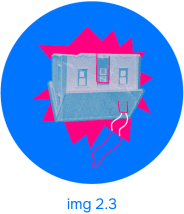

Задача
Оформление серии выпусков для VK Видео. На основе брендбуков разработана визуальная система: фирменные цвета, шрифты, коллажная эстетика. Стиль легко масштабируется, материалы читаемы и адаптированы под разные форматы.Клиенту нужен был логотип в ярких цветах брендбука с отсылкой к перевёрнутому дому. Предложено две концепции в нескольких интерпретациях. В итоге выбрали вторую — она лучше передавала идею и вписалась в общий стиль.

Варианты применения
Раскадровка

Чтобы сохранить живость коллажа, использовались собственные фото — реальные предметы, а не стоки и нейросети. Всё отснято и обработано вручную, что сделало визуал уникальным и авторским.


К выпуску делаем брендированные карточки с вопросами для ведущих и гостей и раздаточные материалы. Всё в едином стиле, под тему выпуска.


Бэкстейдж со съёмок — спасибо @elizfes за кадры.
После съёмок вместе с редактором готовим графику для выпуска: сноски, упоминания персонажей, рубрики — всё в одном стиле по брендбуку. Это помогает зрителям легче воспринимать информацию. Затем передаём материалы на анимацию и финальный монтаж.